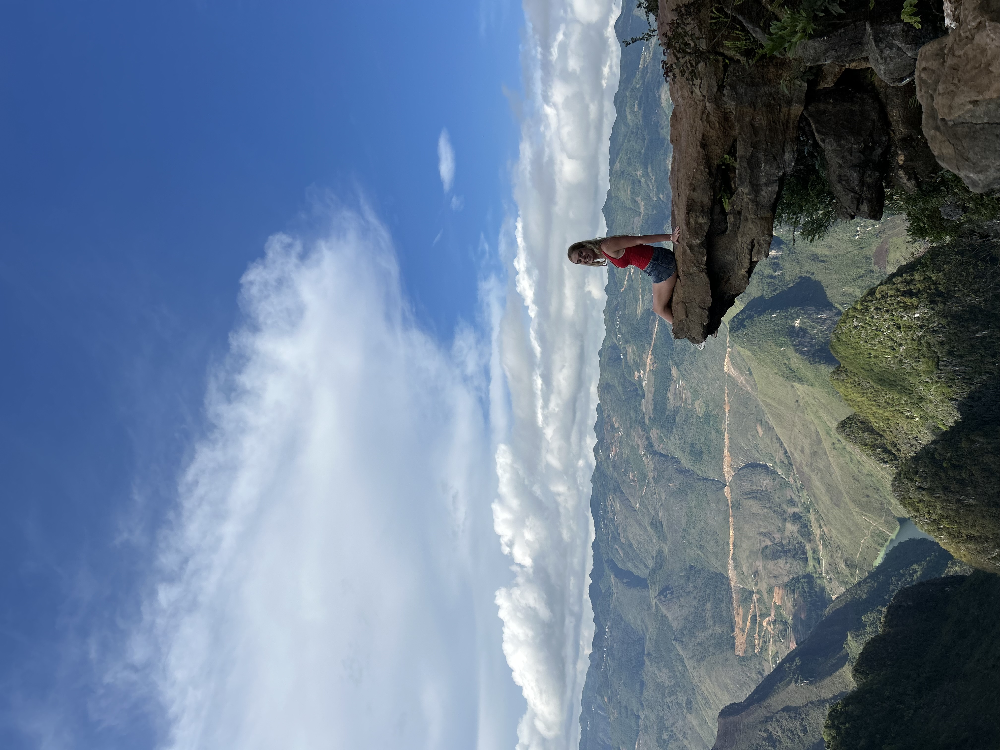
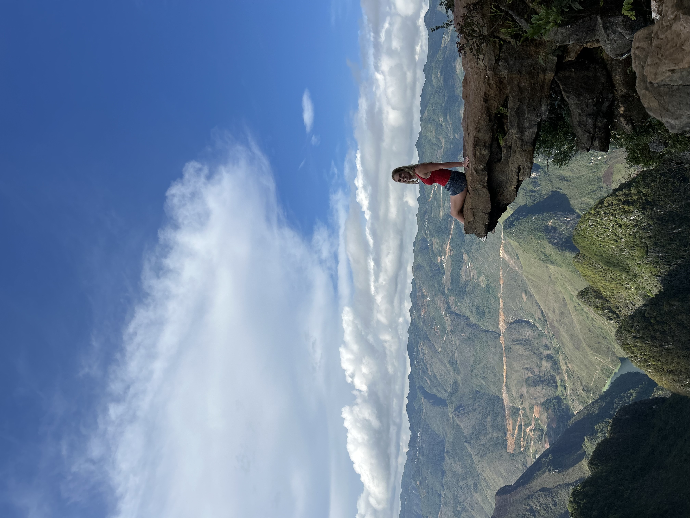

About Me
Hi! Alongside my academic pursuits, I'm deeply passionate about creative exploration and self-expression. I’m always seeking out new experiences that allow me to blend analytical thinking with imagination—whether through collaborative projects, problem-solving challenges, or artistic endeavors. I thrive in environments where curiosity, innovation, and thoughtful engagement come together, and I’m excited to keep learning and growing through opportunities that connect intellect with creativity.